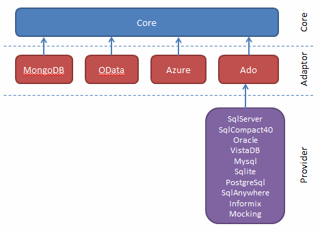

Simple.Data is a lightweight framework that uses the dynamic features of .NET 4 to provide an expressive, ORM-ish way of accessing and manipulating data without any of the code pre-generation and boilerplate required by other frameworks. In this section, we see why and how to get started with Simple.Data.
Requirements and Depedencies
Simple.Data requires
- v4.0 or greater of the .NET framework, or
- v2.10 or greater of the Mono framework
Beyond that it has no dependencies outside of the BCL other than those within its own sphere.

Your project must include references to
- Simple.Data.Core
- A Simple.Data adaptor
- A Simple.Data provider (as appropriate)
The diagram above shows all the currently available adaptors and providers and their dependencies.